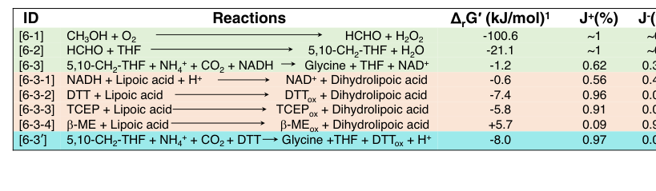

gcvT encodes aminomethyltransferase (EC 2.1.2.10), also known as glycine cleavage system T protein, which catalyzes the final step of the glycine cleavage system: the transfer of the aminomethyl group from the lipoyl-bound intermediate (on gcvH) to tetrahydrofolate (THF), producing 5,10-methylene-THF and releasing ammonia. The enzyme belongs to the GcvT family and functions as a component of the glycine cleavage complex, working in concert with gcvP (P protein, glycine dehydrogenase), gcvH (H protein, lipoyl-carrier), and gcvL (L protein, dihydrolipoyl dehydrogenase). In methylotrophs, the glycine cleavage system connects the serine cycle to the THF one-carbon pool: glycine (produced from serine by serA) is oxidatively cleaved by the GCV system, generating 5,10-methylene-THF (which feeds into C1 metabolism), CO2, and ammonia. GcvT contains two characteristic domains: an aminomethyltransferase folate-binding domain (residues 25-274) and a C-terminal domain (residues 305-385). The enzyme is essential for glycine catabolism and for connecting amino acid metabolism to the THF-dependent one-carbon pool, allowing the organism to recycle one-carbon units between different pathways during methylotrophic growth.
| GO Term | Evidence | Action | Reason |
|---|---|---|---|
|
GO:0004047
aminomethyltransferase activity
|
IEA
GO_REF:0000120 |
ACCEPT |
Summary: This is the primary and specific catalytic activity of GcvT - the transfer of the aminomethyl group from the lipoyl-bound intermediate (on gcvH) to tetrahydrofolate, producing 5,10-methylene-THF and ammonia. [file:METEA/gcvT/gcvT-uniprot.txt, "aminomethyltransferase"; "N(6)-[(R)-S(8)-aminomethyldihydrolipoyl]-L-lysyl-[protein] + (6S)-5,6,7,8-tetrahydrofolate = N(6)-[(R)-dihydrolipoyl]-L-lysyl-[protein] + (6R)-5,10-methylene-5,6,7,8-tetrahydrofolate + NH4(+)"]. Falcon deep research independently confirms this is the conserved, core catalytic role of GcvT across bacteria and corroborates the products of the reaction.
Supporting Evidence:
file:METEA/gcvT/gcvT-deep-research-falcon.md
transfers the aminomethyl group from the H-protein intermediate to **THF**, producing **5,10-methylene-THF** and releasing **NH3**
file:METEA/gcvT/gcvT-deep-research-falcon.md
is a core catalytic component of the **glycine cleavage system**
|
|
GO:0005960
glycine cleavage complex
|
IEA
GO_REF:0000002 |
ACCEPT |
Summary: GcvT is a component of the glycine cleavage complex, working together with gcvP, gcvH, and gcvL to catalyze the oxidative cleavage of glycine. This is the primary cellular location for the enzyme. [file:METEA/gcvT/gcvT-uniprot.txt, "Glycine cleavage system T protein"]. Falcon deep research confirms GcvT (the T protein) functions with the GCS P, H, and L proteins, with the H protein carrying the lipoyl-bound aminomethyl intermediate that GcvT acts on.
Supporting Evidence:
file:METEA/gcvT/gcvT-deep-research-falcon.md
functions with GCS **P, H, and L** proteins; H protein carries the lipoyl-bound intermediate
|
|
GO:0006546
glycine catabolic process
|
IEA
GO_REF:0000002 |
ACCEPT |
Summary: GcvT catalyzes the final step of glycine catabolism via the glycine cleavage system, transferring the aminomethyl group to THF and releasing ammonia. This connects glycine degradation to the one-carbon pool. [file:METEA/gcvT/gcvT-uniprot.txt, "Glycine cleavage system T protein"]. Falcon deep research corroborates that by producing 5,10-methylene-THF, GcvT links glycine interconversion to the one-carbon folate pool, which in Methylorubrum extorquens AM1 feeds assimilation pathways including the serine cycle.
Supporting Evidence:
file:METEA/gcvT/gcvT-deep-research-falcon.md
By producing **5,10-methylene-THF**, GcvT links glycine interconversion to the **one-carbon folate pool**
file:METEA/gcvT/gcvT-deep-research-falcon.md
H4F-dependent enzymes help maintain high levels of intermediates needed to feed the assimilatory serine cycle
|
|
GO:0008483
transaminase activity
|
IEA
GO_REF:0000043 |
KEEP AS NON CORE |
Summary: This is technically correct as GcvT transfers an aminomethyl group, but it's a somewhat misleading general term. The more specific term GO:0004047 (aminomethyltransferase activity) provides better functional annotation.
|
|
GO:0016740
transferase activity
|
IEA
GO_REF:0000043 |
KEEP AS NON CORE |
Summary: This is a very general parent term for all enzymes that transfer functional groups. While technically correct, the more specific term GO:0004047 provides much better functional annotation.
|
The research report should be a detailed narrative explaining the function, biological processes, and localization of the gene product. Citations should be given for all claims.
You should prioritize authoritative reviews and primary scientific literature when conducting research. You can supplement
this with annotations you find in gene/protein databases, but these can be outdated or inaccurate.
We are specifically interested in the primary function of the gene - for enzymes, what reaction is catalyzed, and what is the substrate specificity? For transporters, what is the substrate? For structural proteins or adapters, what is the broader structural role? For signaling molecules, what is the role in the pathway.
We are interested in where in or outside the cell the gene product carries out its function.
We are also interested in the signaling or biochemical pathways in which the gene functions. We are less interested in broad pleiotropic effects, except where these elucidate the precise role.
Include evidence where possible. We are interested in both experimental evidence as well as inference from structure, evolution, or bioinformatic analysis. Precise studies should be prioritized over high-throughput, where available.
The UniProt target (C5AUG2) is annotated as aminomethyltransferase (glycine cleavage system T-protein, GcvT; EC 2.1.2.10) from Methylorubrum extorquens strain AM1. Within the glycine cleavage system (GCS), GcvT is the tetrahydrofolate (THF)-dependent aminomethyl transferase that converts the aminomethylated intermediate carried by the lipoyl “swinging arm” of the H-protein into 5,10-methylene-THF while releasing ammonia, thereby linking glycine catabolism/synthesis to the cellular one-carbon (C1) folate pool. (wittmiss2020stoichiometryoftwo pages 1-2, patel2016expressionofclostridium pages 20-23)
A key limitation of the available corpus retrieved here is that it contains little direct, AM1-specific experimental characterization of the particular AM1 protein sequence C5AUG2 (e.g., purified enzyme kinetics, mutant phenotypes in AM1). Accordingly, AM1-specific statements below are anchored to (i) the UniProt identity provided by the user and (ii) literature describing THF-dependent C1 metabolism in M. extorquens AM1 and the conserved GcvT function across organisms. (klein2022unravellingformaldehydemetabolism pages 4-5, wittmiss2020stoichiometryoftwo pages 1-2, patel2016expressionofclostridium pages 20-23)
Recent work (2023) demonstrates that the reversible GCS module (including GcvT) can be engineered in cell-free formats to fix CO2 into amino acids with quantitative performance metrics (rates, yields, thermodynamic driving forces), highlighting real-world synthetic-biology applications of GcvT-containing systems. (liu2023turnaircapturedco2 pages 1-2, liu2023turnaircapturedco2 pages 5-7, liu2023turnaircapturedco2 media 54c2569d, liu2023turnaircapturedco2 media d220b323)
The target protein is aminomethyltransferase / glycine cleavage system T-protein (GcvT), EC 2.1.2.10, encoded by gcvT in Methylorubrum extorquens AM1.
The symbol gcvT is used broadly across bacteria for the GCS T-protein. All evidence used here refers to GcvT as THF-dependent aminomethyltransferase, consistent with the UniProt description; no evidence in the retrieved set suggested an alternative meaning of “gcvT” that would conflict with the UniProt identity. (wittmiss2020stoichiometryoftwo pages 1-2, patel2016expressionofclostridium pages 20-23, liu2023turnaircapturedco2 pages 1-2)
The GCS is a multi-protein enzyme system (classically P, H, T, and L proteins) that interconverts glycine and the one-carbon folate pool.
Mechanistically, the H-protein’s lipoyl arm cycles between reaction partners; the T-protein step produces a reduced form of the H-protein that must be re-oxidized (classically by L-protein), enabling subsequent catalytic cycles. (wittmiss2020stoichiometryoftwo pages 1-2)
At the functional level, bacterial GcvT enzymes are THF-dependent and act on the aminomethylated lipoyl arm of GCS H-protein, producing methylene-THF (5,10-CH2-THF) and releasing ammonia. (patel2016expressionofclostridium pages 20-23)
In the reverse direction (used in the reductive glycine pathway conceptually and in engineered systems), the GCS can produce glycine from 5,10-methylene-THF, CO2, and ammonium, coupled to reducing power. The reversibility of this module is a key conceptual basis for CO2/formate assimilation strategies. (wittmiss2020stoichiometryoftwo pages 1-2, liu2023turnaircapturedco2 pages 1-2)
In bacteria, the THF-dependent one-carbon network and the GCS proteins are typically cytosolic, consistent with the biochemical role of GcvT acting on soluble THF and soluble protein partners (H/P/L). This is also consistent with the non-membrane-associated descriptions of the GCS in the cited sources. (wittmiss2020stoichiometryoftwo pages 1-2, patel2016expressionofclostridium pages 20-23)
M. extorquens AM1 is a model methylotroph that uses formaldehyde as a central intermediate during growth on methanol.
A 2022 review of formaldehyde metabolism notes that H4F/THF-dependent reactions occur in M. extorquens AM1 and that H4F-dependent enzymes help maintain high levels of intermediates needed to feed the assimilatory serine cycle, with formate described as a branch point between assimilation and dissimilation. This provides organism-level context that the THF one-carbon pool is an important metabolic hub in AM1, and therefore an enzyme that generates 5,10-methylene-THF (such as GcvT) is plausibly important for routing C1 units into central metabolism. (klein2022unravellingformaldehydemetabolism pages 4-5)
The same review emphasizes that AM1 relies heavily on the H4MPT-dependent pathway to keep formaldehyde below toxic levels (context for methylotrophy), while THF-dependent chemistry provides intermediates for assimilation. (klein2022unravellingformaldehydemetabolism pages 4-5)
Evidence gap: within the retrieved documents, there is no direct AM1 gcvT knockout/overexpression phenotype or purified AM1 GcvT kinetic characterization for UniProt C5AUG2.
A 2023 Nature Communications study developed an ATP- and NAD(P)H-free chemoenzymatic system that uses a re-engineered reversible GCS module (including T protein/aminomethyltransferase) coupled to non-enzymatic steps to synthesize glycine, serine, and pyruvate from methanol plus gaseous/air-derived CO2. (liu2023turnaircapturedco2 pages 1-2)
Key mechanistic insights include how the H-protein lipoyl/aminomethyl arm behavior (including “self-protection” within an H-protein cavity) affects overall performance; mutations that increase arm mobility improved glycine formation. Because the arm must commute between P and T proteins, these findings are directly relevant to how efficiently GcvT-containing modules can be engineered and optimized. (liu2023turnaircapturedco2 pages 5-7)
Thermodynamics for the overall glycine synthesis step were quantified, including how replacing the canonical L-protein/NADH reduction with DTT-based chemical reduction changes driving force. (liu2023turnaircapturedco2 pages 1-2, liu2023turnaircapturedco2 media 54c2569d)
Within the retrieved set, 2024 items referencing “aminomethyltransferase” were not focused on bacterial GcvT enzymology in Methylorubrum; thus, the most informative recent primary study available here is 2023. (liu2023turnaircapturedco2 pages 1-2, liu2023turnaircapturedco2 pages 5-7)
The reductive glycine pathway concept leverages the reversibility of the GCS module to assimilate C1 units (e.g., formate/CO2) into biomass building blocks. In engineered contexts, GcvT is the THF-dependent module enabling conversion between glycine and 5,10-methylene-THF. (wittmiss2020stoichiometryoftwo pages 1-2, liu2023turnaircapturedco2 pages 1-2)
In an E. coli engineering study (2018), gcvT is explicitly identified as aminomethyltransferase and was included in synthetic operons constructed to enable the rGlyP in vivo. This demonstrates the standard engineering use of gcvT as the T-protein function in pathway design. (yishai2018invivoassimilation pages 6-8)
The 2023 study demonstrates a concrete “real-world” direction: cell-free or hybrid chemoenzymatic conversion of methanol and air-captured CO2 into amino acids at g/L levels by leveraging the GCS module (including GcvT). (liu2023turnaircapturedco2 pages 1-2, liu2023turnaircapturedco2 pages 5-7)
A consistent theme in the GCS literature is that the system’s multi-enzyme nature and intermediate channeling via H-protein complicate mechanistic and kinetic understanding. A 2022 in vitro study emphasizes that GCS kinetic data are scarce and that multi-protein stoichiometry can strongly affect rates, underscoring why GcvT function is often best understood in the context of the whole complex rather than as an isolated enzyme. (xu2022improvementofglycine pages 1-2)
In addition, multienzyme organization and subunit stoichiometry (demonstrated extensively in plants and also explored as a general property of GCS-like systems) supports the view that physical organization and partner availability influence the effective activity of GcvT in vivo. (wittmiss2020stoichiometryoftwo pages 1-2)
From Liu et al. (2023):
These quantitative values describe a reconstituted/engineered GCS module containing T-protein activity, and therefore support expectations about what GcvT-containing systems can achieve, but they do not provide kinetic constants specific to the AM1 enzyme sequence C5AUG2.
GcvT (aminomethyltransferase; EC 2.1.2.10) catalyzes THF-dependent transfer of an aminomethyl unit from the GCS H-protein intermediate to THF, generating 5,10-methylene-THF and releasing NH3; it is a core catalytic component of the glycine cleavage system. (wittmiss2020stoichiometryoftwo pages 1-2, patel2016expressionofclostridium pages 20-23)
By producing 5,10-methylene-THF, GcvT links glycine interconversion to the one-carbon folate pool, which in methylotrophs like M. extorquens AM1 is connected to assimilation pathways (e.g., serine cycle feeding) through THF-dependent chemistry. (klein2022unravellingformaldehydemetabolism pages 4-5, wittmiss2020stoichiometryoftwo pages 1-2)
Consistent with THF-dependent one-carbon chemistry and soluble multi-enzyme complex function, the AM1 GcvT is expected to be cytosolic. (wittmiss2020stoichiometryoftwo pages 1-2, patel2016expressionofclostridium pages 20-23)
The following table summarizes the functional annotation in a compact form, including reaction logic, cofactors, pathway context, and quantitative data available from recent studies.
| Gene/protein target | Protein name | EC number | Reaction / biochemical role | Main substrates/products | Cofactors / partner components | Pathway context in Methylorubrum extorquens AM1 | Cellular localization | Key evidence notes | Key quantitative data | Key citations, URLs, dates |
|---|---|---|---|---|---|---|---|---|---|---|
| gcvT (UniProt C5AUG2; locus MexAM1_META1p0622) | Aminomethyltransferase; glycine cleavage system T protein (GcvT) | 2.1.2.10 | Forward GCV direction: transfers the aminomethyl group from aminomethylated H protein to THF, releasing NH3 and generating 5,10-methylene-THF while converting H-protein to the reduced form; part of the overall GCS conversion of glycine + THF + NAD+ → 5,10-methylene-THF + CO2 + NH3 + NADH + H+. Reverse/rGCS overall: participates in glycine synthesis from 5,10-methylene-THF + NH4+ + CO2 + reducing power → glycine + THF. (wittmiss2020stoichiometryoftwo pages 1-2, patel2016expressionofclostridium pages 20-23, liu2023turnaircapturedco2 pages 1-2) | Forward: aminomethyl-H protein + THF → methylene-THF + NH3 + reduced H-protein. Overall forward GCV consumes glycine, THF, NAD+. Reverse overall rGCS consumes 5,10-CH2-THF, NH4+, CO2, reductant to make glycine + THF. (wittmiss2020stoichiometryoftwo pages 1-2, patel2016expressionofclostridium pages 20-23, liu2023turnaircapturedco2 pages 1-2) | Requires tetrahydrofolate (THF) as one-carbon acceptor and functions with GCS P, H, and L proteins; H protein carries the lipoyl-bound intermediate, L reoxidizes/reduces the H-protein cycle in the canonical system. In engineered systems, chemical reductants such as DTT can replace the L-protein reduction step. (wittmiss2020stoichiometryoftwo pages 1-2, liu2023turnaircapturedco2 pages 1-2, liu2023turnaircapturedco2 pages 5-7) | Links the glycine cleavage system to the THF one-carbon pool. In methylotrophs such as M. extorquens AM1, H4F/THF-linked C1 metabolism feeds assimilation pathways including the serine cycle; more broadly, GcvT is also a core enzyme for the reductive glycine pathway used in synthetic C1 assimilation. (klein2022unravellingformaldehydemetabolism pages 4-5, wittmiss2020stoichiometryoftwo pages 1-2, liu2023turnaircapturedco2 pages 1-2) | Cytosolic bacterial enzyme (inference from bacterial GCS/THF metabolism and lack of membrane association in cited pathway descriptions). (wittmiss2020stoichiometryoftwo pages 1-2, patel2016expressionofclostridium pages 20-23, liu2023turnaircapturedco2 pages 1-2) | Identity verification: literature support matches UniProt annotation for GcvT as the aminomethyltransferase/T protein of GCS, but organism-specific primary literature directly characterizing AM1 gcvT/C5AUG2 is limited in the retrieved set. Review evidence confirms that M. extorquens AM1 uses H4F-dependent C1 metabolism tightly connected to the serine cycle, consistent with a cytosolic GcvT role in THF-linked one-carbon transfer. General GCS sources define the T-protein reaction and complex role; recent synthetic-biology studies use the same enzyme function in reverse GCS/rGlyP implementations. (klein2022unravellingformaldehydemetabolism pages 4-5, wittmiss2020stoichiometryoftwo pages 1-2, patel2016expressionofclostridium pages 20-23, liu2023turnaircapturedco2 pages 1-2) | 2023 re-engineered rGCS data: overall glycine synthesis step 5,10-CH2-THF + NH4+ + CO2 + NADH → glycine + THF + NAD+ had ΔrG' = -1.2 kJ/mol; replacing the canonical reduction with DTT gave ΔrG' = -8.0 kJ/mol for the redesigned glycine synthesis step. Optimized system reached ~75 μM/min glycine production at 60 μM engineered H protein vs <20 μM/min with wild-type H; produced 15.5 mM (~1.2 g/L) glycine in 3.5 h, with 78% carbon yield from formaldehyde and 31% from CO2; with gaseous CO2 under 0.2 MPa, glycine reached 3.0 mM (30% CO2) or 2.3 mM (10% CO2). These numbers describe the GCS module that includes the T protein, not AM1-native enzyme kinetics specifically. (liu2023turnaircapturedco2 pages 1-2, liu2023turnaircapturedco2 pages 5-7, liu2023turnaircapturedco2 media 54c2569d) | Liu J, Zhang H, Xu Y, Meng H, Zeng A-P. Nature Communications (2023-05), https://doi.org/10.1038/s41467-023-38490-w (liu2023turnaircapturedco2 pages 1-2, liu2023turnaircapturedco2 pages 5-7, liu2023turnaircapturedco2 media 54c2569d); Wittmiß M et al. The Plant Journal (2020-05), https://doi.org/10.1111/tpj.14773 (wittmiss2020stoichiometryoftwo pages 1-2); Klein VJ et al. Microorganisms (2022-01), https://doi.org/10.3390/microorganisms10020220 (klein2022unravellingformaldehydemetabolism pages 4-5); Patel M. thesis/manuscript on GCS/rGlyP (2016) describing T-protein function (patel2016expressionofclostridium pages 20-23) |
Table: This table summarizes the verified identity, enzymatic role, pathway context, localization, evidence base, and quantitative data relevant to functional annotation of Methylorubrum extorquens AM1 gcvT (UniProt C5AUG2). It is useful as a compact evidence-backed annotation aid, while noting the limited organism-specific primary literature directly on AM1 gcvT.
Two figure crops from Liu et al. (2023) provide (i) a thermodynamic table for key steps including glycine synthesis and (ii) glycine production performance plots and yields, illustrating how GcvT-containing modules are leveraged for CO2-to-amino acid biomanufacturing. (liu2023turnaircapturedco2 media 54c2569d, liu2023turnaircapturedco2 media d220b323)
References
(wittmiss2020stoichiometryoftwo pages 1-2): Maria Wittmiß, Stefan Mikkat, Martin Hagemann, and Hermann Bauwe. Stoichiometry of two plant glycine decarboxylase complexes and comparison with a cyanobacterial glycine cleavage system. The Plant Journal, 103:801-813, May 2020. URL: https://doi.org/10.1111/tpj.14773, doi:10.1111/tpj.14773. This article has 8 citations.
(patel2016expressionofclostridium pages 20-23): M Patel. Expression of clostridium acidurici 9a glycine cleavage system in escherichia coli for formatotrophic growth via reductive glycine pathway. Unknown journal, 2016.
(klein2022unravellingformaldehydemetabolism pages 4-5): Vivien Jessica Klein, Marta Irla, Marina Gil López, Trygve Brautaset, and Luciana Fernandes Brito. Unravelling formaldehyde metabolism in bacteria: road towards synthetic methylotrophy. Microorganisms, 10:220, Jan 2022. URL: https://doi.org/10.3390/microorganisms10020220, doi:10.3390/microorganisms10020220. This article has 82 citations.
(liu2023turnaircapturedco2 pages 1-2): Jianming Liu, Han Zhang, Yingying Xu, Hao Meng, and An-Ping Zeng. Turn air-captured co2 with methanol into amino acid and pyruvate in an atp/nad(p)h-free chemoenzymatic system. Nature Communications, May 2023. URL: https://doi.org/10.1038/s41467-023-38490-w, doi:10.1038/s41467-023-38490-w. This article has 67 citations and is from a highest quality peer-reviewed journal.
(liu2023turnaircapturedco2 pages 5-7): Jianming Liu, Han Zhang, Yingying Xu, Hao Meng, and An-Ping Zeng. Turn air-captured co2 with methanol into amino acid and pyruvate in an atp/nad(p)h-free chemoenzymatic system. Nature Communications, May 2023. URL: https://doi.org/10.1038/s41467-023-38490-w, doi:10.1038/s41467-023-38490-w. This article has 67 citations and is from a highest quality peer-reviewed journal.
(liu2023turnaircapturedco2 media 54c2569d): Jianming Liu, Han Zhang, Yingying Xu, Hao Meng, and An-Ping Zeng. Turn air-captured co2 with methanol into amino acid and pyruvate in an atp/nad(p)h-free chemoenzymatic system. Nature Communications, May 2023. URL: https://doi.org/10.1038/s41467-023-38490-w, doi:10.1038/s41467-023-38490-w. This article has 67 citations and is from a highest quality peer-reviewed journal.
(liu2023turnaircapturedco2 media d220b323): Jianming Liu, Han Zhang, Yingying Xu, Hao Meng, and An-Ping Zeng. Turn air-captured co2 with methanol into amino acid and pyruvate in an atp/nad(p)h-free chemoenzymatic system. Nature Communications, May 2023. URL: https://doi.org/10.1038/s41467-023-38490-w, doi:10.1038/s41467-023-38490-w. This article has 67 citations and is from a highest quality peer-reviewed journal.
(yishai2018invivoassimilation pages 6-8): Oren Yishai, Madeleine Bouzon, Volker Döring, and Arren Bar-Even. In vivo assimilation of one-carbon via a synthetic reductive glycine pathway in escherichia coli. ACS synthetic biology, 7 9:2023-2028, May 2018. URL: https://doi.org/10.1021/acssynbio.8b00131, doi:10.1021/acssynbio.8b00131. This article has 203 citations and is from a domain leading peer-reviewed journal.
(xu2022improvementofglycine pages 1-2): Yingying Xu, Jie Ren, Wei Wang, and An‐Ping Zeng. Improvement of glycine biosynthesis from one‐carbon compounds and ammonia catalyzed by the glycine cleavage system in vitro. Engineering in Life Sciences, 22:40-53, Nov 2022. URL: https://doi.org/10.1002/elsc.202100047, doi:10.1002/elsc.202100047. This article has 34 citations and is from a peer-reviewed journal.

---
id: C5AUG2
gene_symbol: gcvT
product_type: PROTEIN
taxon:
id: NCBITaxon:272630
label: Methylorubrum extorquens AM1
description: 'gcvT encodes aminomethyltransferase (EC 2.1.2.10), also known as glycine
cleavage system T protein, which catalyzes the final step of the glycine cleavage
system: the transfer of the aminomethyl group from the lipoyl-bound intermediate
(on gcvH) to tetrahydrofolate (THF), producing 5,10-methylene-THF and releasing
ammonia. The enzyme belongs to the GcvT family and functions as a component of the
glycine cleavage complex, working in concert with gcvP (P protein, glycine dehydrogenase),
gcvH (H protein, lipoyl-carrier), and gcvL (L protein, dihydrolipoyl dehydrogenase).
In methylotrophs, the glycine cleavage system connects the serine cycle to the THF
one-carbon pool: glycine (produced from serine by serA) is oxidatively cleaved by
the GCV system, generating 5,10-methylene-THF (which feeds into C1 metabolism),
CO2, and ammonia. GcvT contains two characteristic domains: an aminomethyltransferase
folate-binding domain (residues 25-274) and a C-terminal domain (residues 305-385).
The enzyme is essential for glycine catabolism and for connecting amino acid metabolism
to the THF-dependent one-carbon pool, allowing the organism to recycle one-carbon
units between different pathways during methylotrophic growth.'
existing_annotations:
- term:
id: GO:0004047
label: aminomethyltransferase activity
evidence_type: IEA
original_reference_id: GO_REF:0000120
review:
summary: This is the primary and specific catalytic activity of GcvT - the transfer
of the aminomethyl group from the lipoyl-bound intermediate (on gcvH) to tetrahydrofolate,
producing 5,10-methylene-THF and ammonia. [file:METEA/gcvT/gcvT-uniprot.txt,
"aminomethyltransferase"; "N(6)-[(R)-S(8)-aminomethyldihydrolipoyl]-L-lysyl-[protein]
+ (6S)-5,6,7,8-tetrahydrofolate = N(6)-[(R)-dihydrolipoyl]-L-lysyl-[protein]
+ (6R)-5,10-methylene-5,6,7,8-tetrahydrofolate + NH4(+)"]. Falcon deep research
independently confirms this is the conserved, core catalytic role of GcvT across
bacteria and corroborates the products of the reaction.
action: ACCEPT
supported_by:
- reference_id: file:METEA/gcvT/gcvT-deep-research-falcon.md
supporting_text: transfers the aminomethyl group from the H-protein intermediate
to **THF**, producing **5,10-methylene-THF** and releasing **NH3**
- reference_id: file:METEA/gcvT/gcvT-deep-research-falcon.md
supporting_text: is a core catalytic component of the **glycine cleavage system**
- term:
id: GO:0005960
label: glycine cleavage complex
evidence_type: IEA
original_reference_id: GO_REF:0000002
review:
summary: GcvT is a component of the glycine cleavage complex, working together
with gcvP, gcvH, and gcvL to catalyze the oxidative cleavage of glycine. This
is the primary cellular location for the enzyme. [file:METEA/gcvT/gcvT-uniprot.txt,
"Glycine cleavage system T protein"]. Falcon deep research confirms GcvT (the
T protein) functions with the GCS P, H, and L proteins, with the H protein
carrying the lipoyl-bound aminomethyl intermediate that GcvT acts on.
action: ACCEPT
supported_by:
- reference_id: file:METEA/gcvT/gcvT-deep-research-falcon.md
supporting_text: functions with GCS **P, H, and L** proteins; H protein carries
the lipoyl-bound intermediate
- term:
id: GO:0006546
label: glycine catabolic process
evidence_type: IEA
original_reference_id: GO_REF:0000002
review:
summary: GcvT catalyzes the final step of glycine catabolism via the glycine
cleavage system, transferring the aminomethyl group to THF and releasing ammonia.
This connects glycine degradation to the one-carbon pool. [file:METEA/gcvT/gcvT-uniprot.txt,
"Glycine cleavage system T protein"]. Falcon deep research corroborates that
by producing 5,10-methylene-THF, GcvT links glycine interconversion to the
one-carbon folate pool, which in Methylorubrum extorquens AM1 feeds assimilation
pathways including the serine cycle.
action: ACCEPT
supported_by:
- reference_id: file:METEA/gcvT/gcvT-deep-research-falcon.md
supporting_text: By producing **5,10-methylene-THF**, GcvT links glycine interconversion
to the **one-carbon folate pool**
- reference_id: file:METEA/gcvT/gcvT-deep-research-falcon.md
supporting_text: H4F-dependent enzymes help maintain high levels of intermediates
needed to feed the assimilatory serine cycle
- term:
id: GO:0008483
label: transaminase activity
evidence_type: IEA
original_reference_id: GO_REF:0000043
review:
summary: This is technically correct as GcvT transfers an aminomethyl group,
but it's a somewhat misleading general term. The more specific term GO:0004047
(aminomethyltransferase activity) provides better functional annotation.
action: KEEP_AS_NON_CORE
- term:
id: GO:0016740
label: transferase activity
evidence_type: IEA
original_reference_id: GO_REF:0000043
review:
summary: This is a very general parent term for all enzymes that transfer functional
groups. While technically correct, the more specific term GO:0004047 provides
much better functional annotation.
action: KEEP_AS_NON_CORE
core_functions:
- description: 'GcvT catalyzes the final step of the glycine cleavage system, transferring
the aminomethyl group from the lipoyl-bound intermediate (on gcvH carrier protein)
to tetrahydrofolate (THF), producing 5,10-methylene-THF and releasing ammonia.
The enzyme functions as a component of the glycine cleavage complex, working
in concert with gcvP (P protein), gcvH (H protein), and gcvL (L protein) to
catalyze the oxidative cleavage of glycine. In the context of methylotrophic
metabolism, the glycine cleavage system connects the serine cycle to the THF
one-carbon pool: glycine (produced from serine) is oxidatively cleaved, generating
5,10-methylene-THF that feeds into C1 metabolism, plus CO2 and ammonia. GcvT
contains an aminomethyltransferase folate-binding domain and a C-terminal domain,
and belongs to the GcvT family. The enzyme is essential for glycine catabolism
and for recycling one-carbon units between amino acid metabolism and the THF-dependent
one-carbon pool during methylotrophic growth.'
molecular_function:
id: GO:0004047
label: aminomethyltransferase activity
directly_involved_in:
- id: GO:0006546
label: glycine catabolic process
supported_by:
- reference_id: file:METEA/gcvT/gcvT-uniprot.txt
supporting_text: aminomethyltransferase...Glycine cleavage system T protein...N(6)-[(R)-S(8)-aminomethyldihydrolipoyl]-L-lysyl-[protein]
+ (6S)-5,6,7,8-tetrahydrofolate = N(6)-[(R)-dihydrolipoyl]-L-lysyl-[protein]
+ (6R)-5,10-methylene-5,6,7,8-tetrahydrofolate + NH4(+)
- reference_id: file:METEA/gcvT/gcvT-deep-research-falcon.md
supporting_text: transfers the aminomethyl group from the H-protein intermediate
to **THF**, producing **5,10-methylene-THF** and releasing **NH3**
- reference_id: file:METEA/gcvT/gcvT-deep-research-falcon.md
supporting_text: By producing **5,10-methylene-THF**, GcvT links glycine interconversion
to the **one-carbon folate pool**
- reference_id: file:METEA/gcvT/gcvT-deep-research-falcon.md
supporting_text: functions with GCS **P, H, and L** proteins; H protein carries
the lipoyl-bound intermediate
in_complex:
id: GO:0005960
label: glycine cleavage complex
references:
- id: file:METEA/gcvT/gcvT-deep-research-falcon.md
title: Falcon deep research report for gcvT (C5AUG2) in Methylorubrum extorquens
AM1
findings:
- supporting_text: transfers the aminomethyl group from the H-protein intermediate
to **THF**, producing **5,10-methylene-THF** and releasing **NH3**
reference_section_type: OTHER
- supporting_text: is a core catalytic component of the **glycine cleavage system**
reference_section_type: OTHER
- supporting_text: functions with GCS **P, H, and L** proteins; H protein carries
the lipoyl-bound intermediate
reference_section_type: OTHER
- supporting_text: By producing **5,10-methylene-THF**, GcvT links glycine interconversion
to the **one-carbon folate pool**
reference_section_type: OTHER
- supporting_text: H4F-dependent enzymes help maintain high levels of intermediates
needed to feed the assimilatory serine cycle
reference_section_type: OTHER
- supporting_text: the THF-dependent one-carbon network and the GCS proteins are
typically **cytosolic**
reference_section_type: OTHER
- supporting_text: the AM1 GcvT is expected to be **cytosolic**
reference_section_type: OTHER
- supporting_text: GcvT is also a core enzyme for the **reductive glycine pathway**
used in synthetic C1 assimilation
reference_section_type: OTHER
- id: file:METEA/gcvT/gcvT-uniprot.txt
title: UniProt entry for gcvT aminomethyltransferase
findings: []
- id: GO_REF:0000002
title: Gene Ontology annotation through association of InterPro records with GO
terms.
findings: []
- id: GO_REF:0000043
title: Gene Ontology annotation based on UniProtKB/Swiss-Prot keyword mapping
findings: []
- id: GO_REF:0000120
title: Combined Automated Annotation using Multiple IEA Methods.
findings: []
status: COMPLETE
{kind=link}